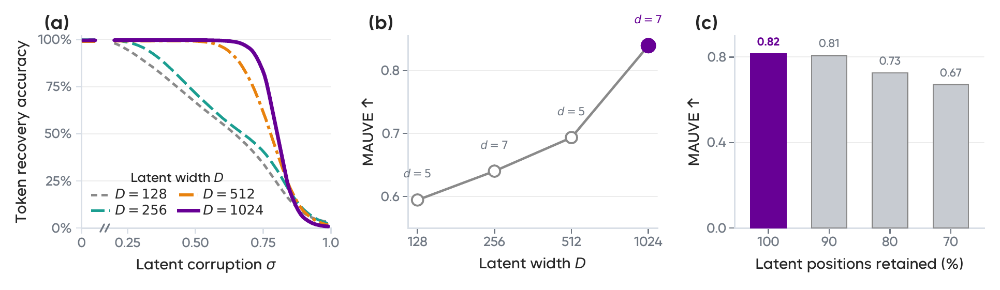
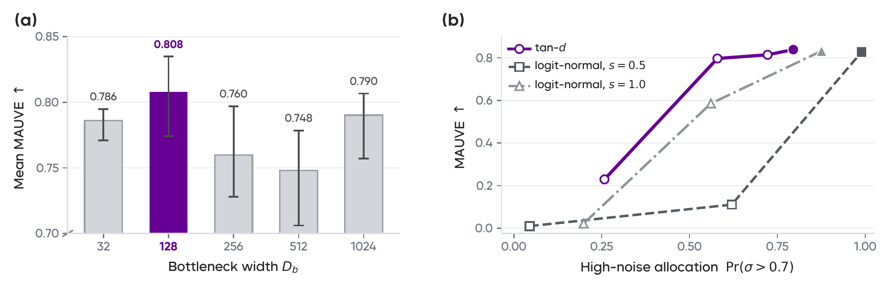
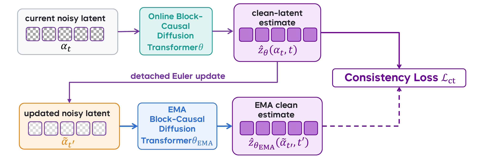
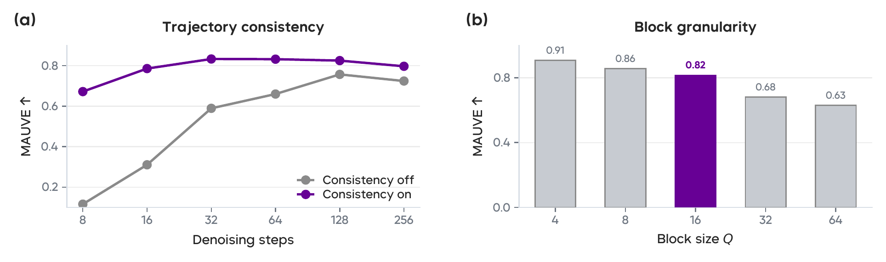

Narrow latents lose token-recovery accuracy much earlier as corruption increases. Wider channels preserve the information required for exact decoding over a substantially broader corruption range.
Abstract
A continuous-latent diffusion model for text.
Language remains an outlier in modern generative modeling: while images, video, and audio are increasingly modeled in continuous latent spaces, text generation still relies predominantly on discrete tokens. Existing continuous language models either inherit embedding spaces not designed for generation and decoding jointly, or compress autoencoded latents to make diffusion easier at the cost of token-level fidelity. We challenge this prevailing design compromise. Instead of simplifying the representation to accommodate the generative model, we preserve a high-capacity, decodable text latent and design the diffusion model to learn its distribution directly.
We introduce AURORA-LM, a continuous-latent diffusion language model that separates the construction of a decodable text representation from the modeling of its generative distribution. To obtain such a representation, we use a Query-based Encoder-Decoder that organizes text into a high-capacity, prefix-aligned latent sequence. We then introduce a Block-causal Diffusion Transformer that learns the distribution of these full-width latents through flow matching, generating blocks from left to right while denoising the positions within each block in parallel. However, retaining a high-capacity latent representation for accurate token decoding also makes its distribution more challenging for the diffusion model to learn. AURORA-LM addresses this difficulty by restricting only the noisy-input pathway while retaining the full clean-latent prediction target, allowing the generative model to accommodate the full-width latent without reducing decoder-facing capacity. We further calibrate the noise-level distribution to the latent width, accounting for how the effective signal strength changes with representation dimensionality. Finally, we introduce self-trajectory consistency to bridge the gap between training on independently sampled noisy states and inference through iterative denoising.
Across comprehensive comparisons, AURORA-LM achieves the strongest performance among the evaluated continuous and diffusion-based language models on OpenWebText free generation and XSum conditional summarization. Scaling to 1B parameters with approximately 1,500 EFLOPs of total compute yields further gains and surpasses a larger publicly released latent-diffusion language model under a matched evaluation protocol. Our results demonstrate that continuous language generation can effectively bridge diffusion-based generative modeling and discrete token decoding through a high-capacity, causally structured, and decodable text representation. All experiments are conducted on Ascend NPUs.
Continuous text interface
A continuous text latent is the interface between token decoding and continuous generation.
AURORA-LM first maps text to a causally ordered latent sequence. The encoder--decoder is trained to reconstruct tokens and then fixed; a block-causal diffusion Transformer subsequently models the latent distribution.

Latent capacity
High-capacity latents support robust token recovery and strong generation.
Channel width controls the information carried by each latent position. We test whether higher capacity preserves token-level information under corruption and remains effective for generation after a separate noise-allocation search for each width.

Retaining higher channel capacity also improves generation after appropriate noise calibration. For each width, we search the same tan-d schedule family and report the best MAUVE, which improves consistently with channel width.
Sequence compression reduces generation cost by requiring fewer generated positions and, for a fixed block size, fewer blockwise denoising stages. This efficiency gain trades against quality: mild compression incurs only a small MAUVE reduction, whereas stronger compression steadily lowers quality.
Modeling the full-width latent distribution
Capacity required for decoding need not also be the width of the noisy input.
The full-width clean target is fixed by the decoder-facing interface. We then examine how the denoiser should read, supervise, and recover this target without reducing the information available for token decoding.

The clean prediction target retains full width for accurate token recovery, whereas the noisy-input pathway determines how much of the corrupted state the Transformer reads at each denoising step. With the clean target fixed, a moderate bottleneck gives the strongest mean MAUVE across the tested solver budgets.
The noise-level distribution determines how flow-matching supervision is allocated along the corruption path. Across tan-d and logit-normal parameterizations, MAUVE improves as more supervision is assigned to highly corrupted states, indicating that the full-width target benefits from stronger high-noise calibration.
Direct clean-latent prediction with an x0-space loss gives the highest MAUVE under both noisy-input widths.
| Target | Loss | Db=128 | Db=1024 |
|---|---|---|---|
| x0 | x0 | 0.815 | 0.807 |
| x0 | v | 0.059 | 0.017 |
| v | x0 | 0.729 | 0.325 |
| v | v | 0.653 | 0.301 |
Self-trajectory consistency
Flow matching supervises independently sampled noisy states, whereas generation repeatedly follows the model's own trajectory.

Self-trajectory consistency
t′ = PrevS(t) < t
α̃t′ = (t′/t) αt + (1 − t′/t) sg(ẑθ(αt, t))
Lct = || ẑθ(αt, t) − sg(ẑθEMA(α̃t′, t′)) ||22
Here PrevS(t) is the lower-noise level reached by one step of the S-step sampling schedule, and sg stops gradients. The full objective averages this term over sampled trajectories and valid latent positions; gradients flow only through the current-model prediction.
Self-conditioning provides the previous clean-latent estimate as an input, but does not explicitly enforce consistency between predictions at successive sampling states. The estimate at time t determines the updated state at time t′ used for the next prediction, so inconsistent estimates of the same clean latent can accumulate errors along the denoising trajectory.
Self-trajectory consistency aligns the clean-latent predictions before and after one model-induced update. The current model predicts at the noisy state; after a detached update, an EMA model supplies the stable stop-gradient target at the neighboring state.
Few-step sampling and block granularity
Trajectory consistency improves few-step sampling; block granularity balances conditioning and parallelism.
Self-trajectory consistency improves MAUVE at every tested step budget, with the largest gains in the few-step regime. Its advantage narrows as the solver uses more steps and the trajectory becomes more finely discretized.
Block size controls the balance between left-to-right conditioning across blocks and parallel denoising within each block. Smaller blocks provide a more complete generated prefix, improving conditional generation at the cost of more sequential stages; Q = 16 is the selected operating point.

System-level evaluation
We evaluate the selected configuration on free generation and conditional summarization, then test whether the formulation remains effective at billion-parameter scale.
Reported model sizes refer only to the block-causal denoiser and exclude the autoencoder.
We compare AURORA-LM-S with autoregressive, discrete-diffusion, and continuous-flow baselines on 1,024-token OpenWebText free generation. It achieves the lowest Gen-PPL and highest MAUVE among the evaluated systems. We then evaluate the same configuration on XSum conditional summarization, where it attains the best ROUGE scores across all three metrics.
We next examine whether the formulation remains effective when the block-causal diffusion Transformer is scaled to approximately 1B parameters. AURORA-LM-L is trained with approximately 1,500 EFLOPs of total compute. Under the matched nine-task benchmark protocol, it surpasses a larger publicly released latent-diffusion language model.

Detailed results
The tables reproduce the reported comparisons. OpenWebText rows are in-house reproductions based on 1,000 generated samples; values marked † are collected by ELF. Model-size and sampling details are provided in the paper appendix.
OpenWebText unconditional generation1,024-token free generation. Lower Gen-PPL is better; higher entropy and MAUVE are better.
| Model | Gen-PPL ↓ | Entropy ↑ | MAUVE ↑ |
|---|---|---|---|
| AR | 39.40 | 5.605 | 0.851 |
| Duo | 86.57 | 5.566 | 0.704 |
| Duo-distilled | 78.22 | 5.574 | 0.715 |
| SEDD | 119.82 | 5.644 | 0.693 |
| MDLM | 121.36 | 5.664 | 0.668 |
| ELF-B | 24.11 | 5.155 | 0.229 |
| AURORA-LM-S | 23.56 | 5.241 | 0.890 |
XSum conditional generationROUGE-1, ROUGE-2, and ROUGE-L; higher is better. † Values collected by ELF.
| Model | R-1 ↑ | R-2 ↑ | R-L ↑ |
|---|---|---|---|
| ELF-B† | 36.0 | 12.2 | 27.8 |
| AR† | 30.5 | 10.2 | 24.4 |
| MDLM† | 33.4 | 11.6 | 25.8 |
| Duo† | 31.4 | 10.1 | 25.0 |
| E2D2† | 28.4 | 8.3 | 22.0 |
| SeqDiffuSeq† | 19.3 | 1.7 | 14.1 |
| AURORA-LM-S | 36.6 | 13.4 | 28.9 |
Nine-task benchmark evaluationAll entries are percentages. Avg is the macro average over the nine tasks; higher is better for every metric.
| Model | Avg ↑ | HellaSwag | MMLU | ARC-C | WinoGrande | StoryCloze | RACE | SIQA | OBQA | SQuAD EM |
|---|---|---|---|---|---|---|---|---|---|---|
| AURORA-LM-L (1B) | 32.6 | 18.4 | 22.2 | 21.2 | 50.3 | 54.8 | 30.6 | 30.2 | 27.8 | 38.2 |
| Cola-DLM (1.8B) | 25.1 | 5.7 | 19.6 | 20.6 | 45.3 | 33.8 | 24.2 | 26.8 | 24.2 | 25.7 |